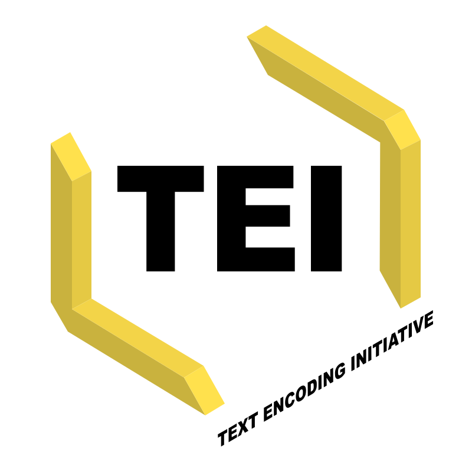
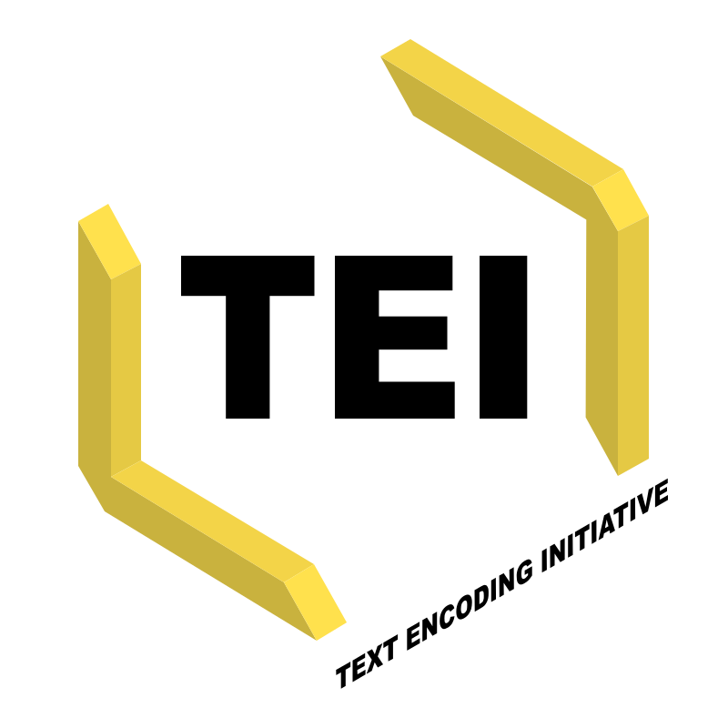

Libro + Capítulos de
Zorrilla, N. (2018). Formas del ateísmo en La Nouvelle Justine y en L’Histoire de Juliette de Donatien Alphonse François de Sade. Buenos Aires: Facultad de Filosofía y Letras. ISBN: 978-987-42-7740-4.
— (2018) As luzes obscurecidas: a libertinagem sadiana como monstruosidade moral. Trad. de Marcelo de Sant'Anna Alves Primo. En Becker, E., Primo, M. de Sant'Anna Alves, Silva, S. H. Souza (Orgs.) Moral, ciência e história no pensamento moderno (257-290). São Cristóvão: Editora UFS (Universidade Federal de Sergipe). ISBN: 978-85-7822-617-6.
— (2014) Sade. En Lutereau, L. & Dipaola, E. (comps.) Los nombres de Gilles Deleuze (63-72). Buenos Aires: Pánico el pánico. ISBN 978-987-1917-22-8.
— (2005) en co-autoría con Eli Sirlin. Glosario de términos útiles. En La luz en el teatro (329 - 351). Buenos Aires: Inteatro.
Artículos
— (2020) Isolisme: Hobbes reinterpretado por Sade. Éndoxa: Series filosóficas. En prensa.
— (2017) Una lectura queer de Sade en la nueva literatura argentina: Pablo Pérez, lion en cage. Orbis Tertius, Vol 22, nº 25.
— (2016) Sade en el pensamiento feminista. Asparkía. Investigació feminista, Nº 29, pp. 91-108.
— (2016) Mística y seducción: el affaire Cadière-Girard y el triunfo de la racionalidad ilustrada en Thérèse philosophe. Çedille, revista de estudios franceses, Nº 12, pp. 447-475.
— (2016) Fatalismo y azar en el Système de la nature de d'Holbach. Práxis filosófica, Nº 42, pp. 179-202.
— (2015) Naturaleza y sexualidad en De Planctu Naturae. De Medio Aevo, Vol. 4, Nº 2, pp. 143-162.
— (2015). El hombre y el monstruo en Also Sprach Zarathustra: Nietzsche y su diálogo crítico con la filosofía política moderna. Observaciones Filosóficas, Nº 20. Publicación online que puede visitarse en http://www.observacionesfilosoficas.net/elhombreyelmonstruo.htm
— (2011). Libertinaje y política en Sade. Cuadernos del Sur, Nº 40, pp. 179-196.
Reseñas
— (2017) Comentario bibliográfico de Diana Cohen Agrest, Spinoza, una cartografía de la Ética. Revista Latinoamericana de Filosofía. Vol 43, Nº 1, pp. 139-140.
— (2016) Reseña de Charles Wolfe, Materialism: a Historico-Philosophical Introduction. Tópicos, Nº 31, pp. 94-102.
— (2013) Reseña de P. H. d’Holbach, Historia crítica de Jesucristo. Cuadernos de filosofía, Nº 61, pp. 99-102.


 
